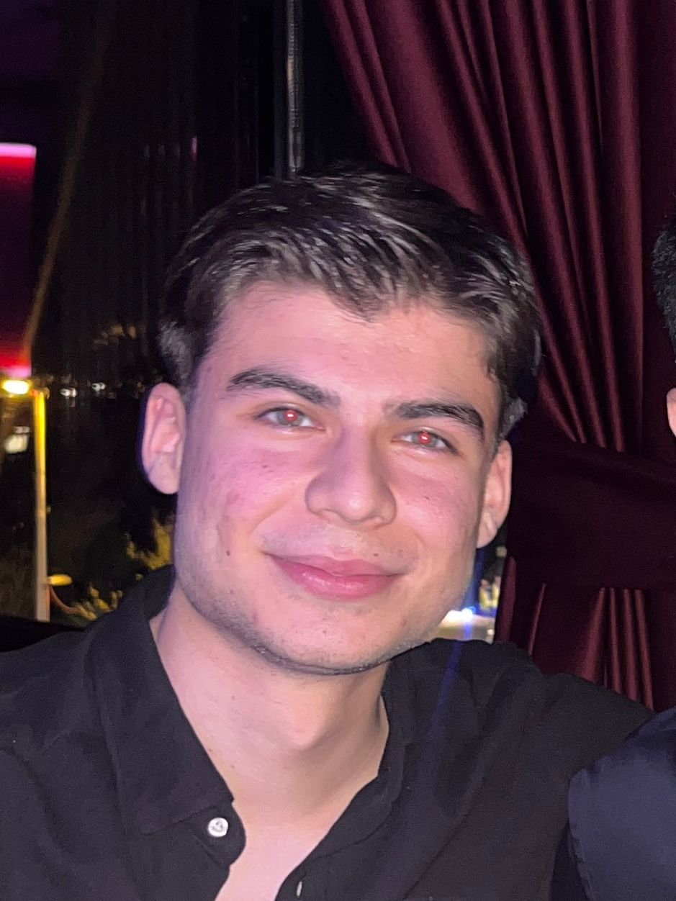
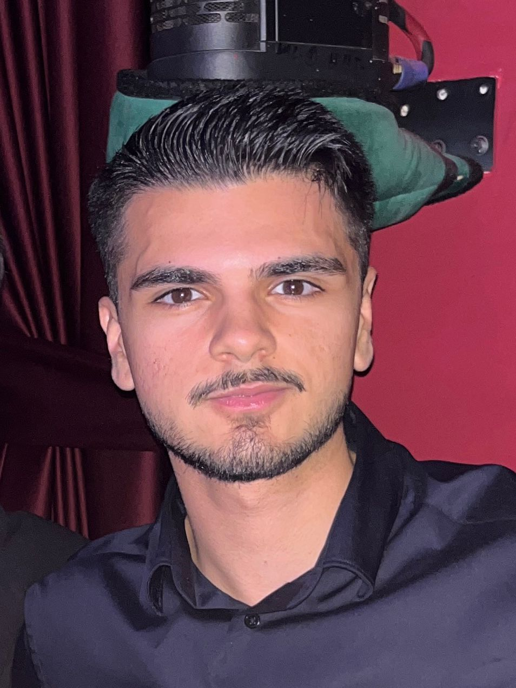

Neler Sunuyoruz?
Misafirlerimize sunduğumuz her lezzetin arkasında büyük bir özen ve seçicilik yatıyor:
- Nitelikli Kahve Deneyimi: Dünyanın en seçkin kahve çekirdeklerini, doğru kavurma ve demleme teknikleriyle bardağınıza taşıyoruz.
- Günlük ve Taze Lezzetler: Kahvenize eşlik eden el yapımı tatlılarımız, taze kruvasanlarımız ve hafif atıştırmalıklarımızla damak tadınıza hitap ediyoruz.
- Konforlu Çalışma ve Sosyalleşme Alanı: İster kitabınızı alıp köşenize çekilin, ister bilgisayarınızı açıp çalışın, isterseniz de sevdiklerinizle keyifli bir hafta sonu geçirin; Venüs’te herkes için bir alan var.
Vizyonumuz
"Kahve, sadece bir içecek değil; insanları bir araya getiren bir bağdır."
Venüs Kafe olarak amacımız, kaliteden ödün vermeden, sürdürülebilir ve etik üretim zincirinden gelen ürünleri sizlerle buluşturmak. Şehrin yerel kültürüne katkı sağlayan, sanata ve paylaşıma değer veren bir topluluk alanı olmaya devam etmek en büyük motivasyonumuzdur.
Venüs Kafe'ye gelin, gününüze keyifli ve sıcak bir mola katın.
Ekibimiz

Batu U.
Kurucu & İş Ortağı — İşletme, operasyon ve müşteri deneyimi sorumlusu.

Arda Y.
Kurucu & Kreatif Direktör — Menü konsepti ve görsel kimlikten sorumlu.